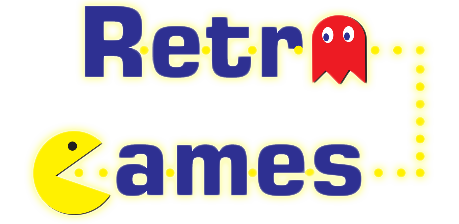

Rodapé Copyright© Designed by Letícia Borin
Esse site foi criado com o único objetivo de aplicar e desenvolver habilidades abordadas em sala de aula, durante o curso de
Desenvolvedor Web, entre os anos de 2018 e 2019. A grade curricular apresenta desde a edição de imagens de maneira mais simples
na ferramenta Photoshop, criação de formas e logos no CorelDRAW até o uso do DreamWeaver para edição de layouts de páginas em
HTML juntamente com CSS. O site com o tema Jogos, foi uma escolha dos alunos para apresentar o desenvolvimento individual em
sala de aula e explorar de maneira descontraída as possibilidades existentes para criar algo com o qual se identificassem.